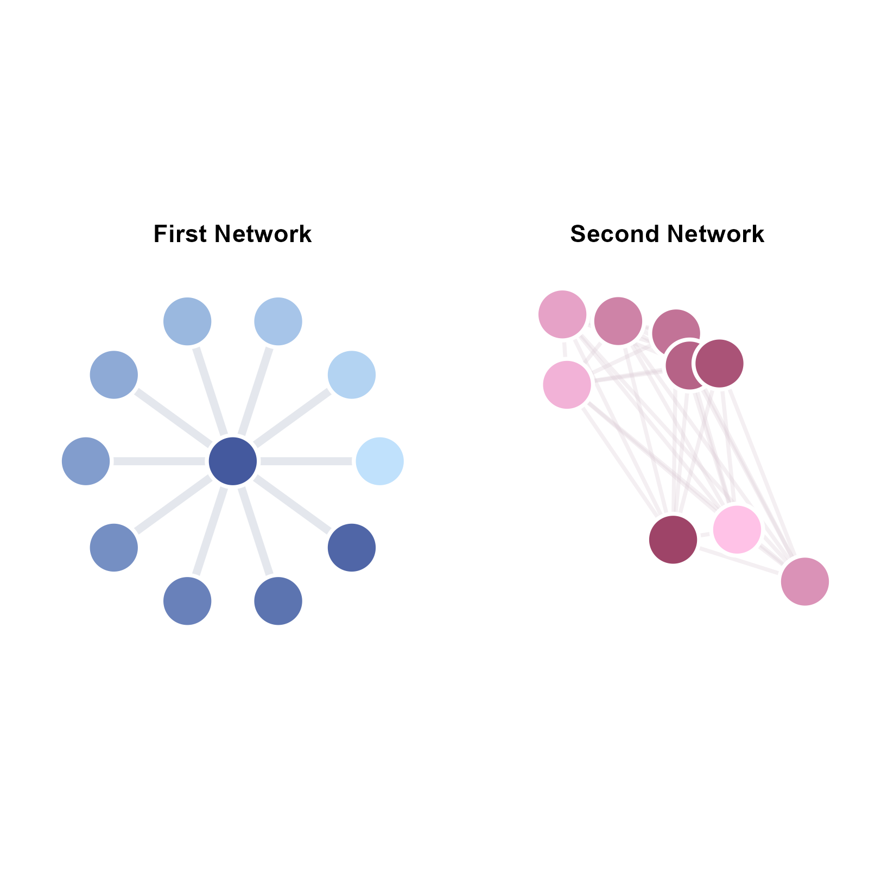
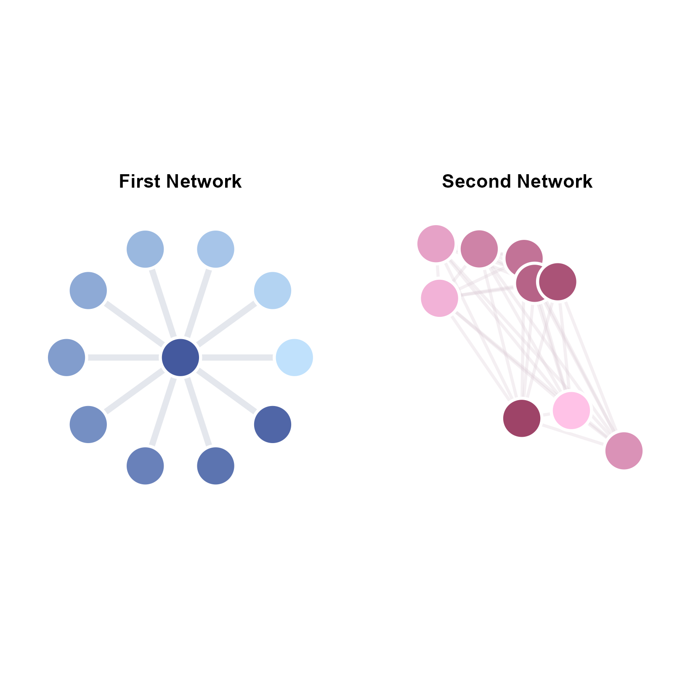

ggsem: Interactive and Reproducible Visualizations of Networks and Structural Equation Modeling Diagrams
Author: Seung Hyun Min
ggsem is an R package that allows users to draw path diagrams for structural equation modeling (SEM) and small-to-medium sized networks interactively using the ggplot2 engine.
As the core of the ggsem package, its shiny app provides an interface that allows extensive customization, and creates CSV outputs, which can then be used to recreate the figures either using the shiny app or in a typical ggplot2 workflow. This will be useful to generate reproducible manuscripts.
Unique features of this R package include options for users to draw gradient lines, gradient arrows, self-loop arrows, as well as interactively change the layout of nodes and edges. Also, ggsem provides layouts of the nodes and edges from the igraph package for networks, understands the string input form in laavan’s syntax, and supports layouts from the semPlot package for SEM diagrams.
The outputs from the ggsem interactive app can be recreated as a raw ggplot output in RStudio, allowing users to further modify the graphical output using a ggplot2 workflow.
 

Installation using RStudio
The stable version of ggsem can be installed using install.packages() from the Comprehensive R Archive Network (CRAN).
install.packages("ggsem")The examples on this website use the development version of the package, which can be directly downloaded using the code below:
install.packages("devtools")
devtools::install_github('smin95/ggsem')Running the ggsem App
The ggsem app can be initiated online using the link: https://smin95.shinyapps.io/ggsem/.
It can also be started locally in RStudio (it runs faster):
ggsem::launch()To access an updated tutorial (sample codes and figures) of the package, please visit https://smin95.github.io/ggsem/.
Disclosure
The creation of the package was in part inspired by this blog post: https://drsimonj.svbtle.com/ggsem-plot-sem-models-with-ggplot2.